Awarded First Prizes in Graph Drawing competitions
First place, 2010 Graph Drawing Competition (Circuit Diagram Category), Hoang Quan Nguyen.
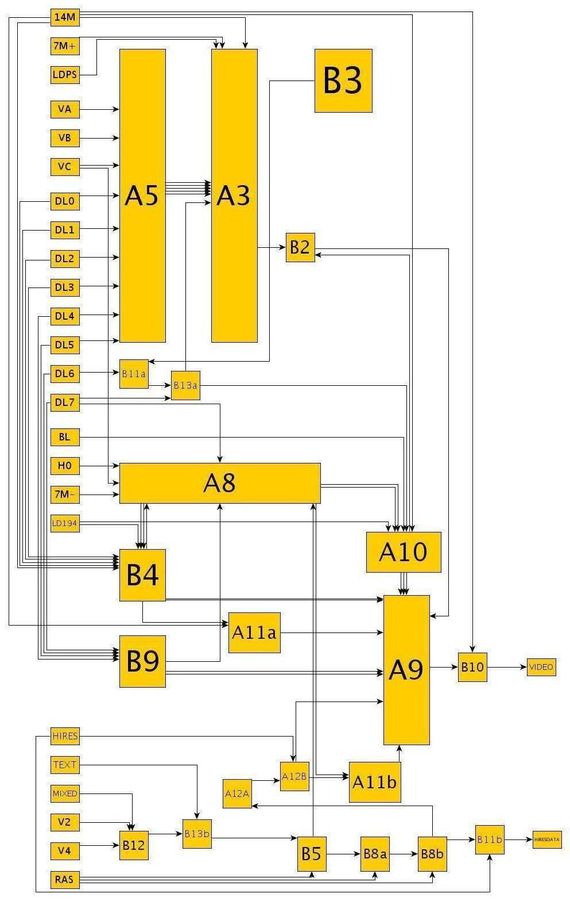
First place, 2006 Graph Drawing Competition (Theory Graph Category), Hoang Quan Nguyen, Seokhee Hong.
| 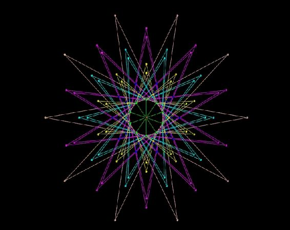 | 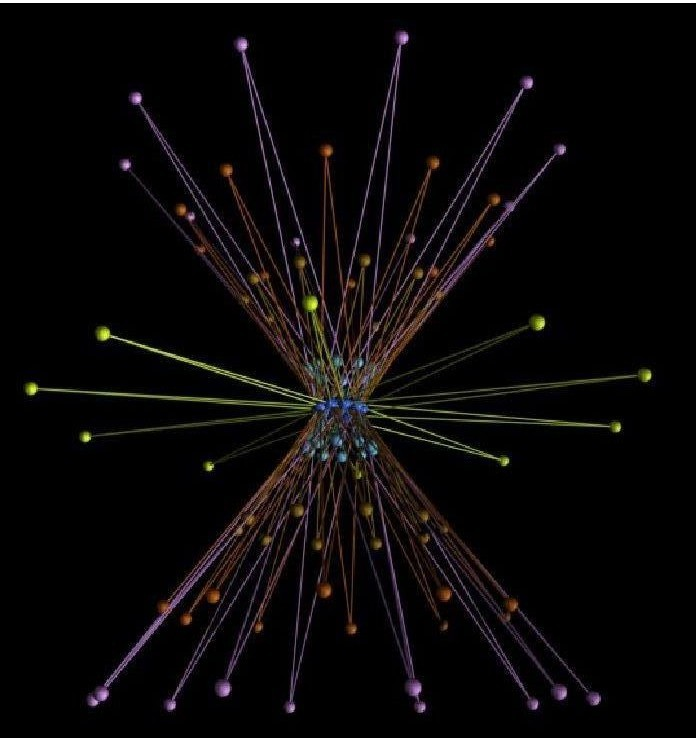 |
First place, 2006 Graph Drawing Competition (History of World Cup Category), Adel Ahmed, Xiaoyan Fu, Seokhee Hong, Hoang Quan Nguyen, Kai Xu. [Movie1] [Movie2]
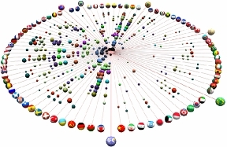
2.5D visualization using Java3D
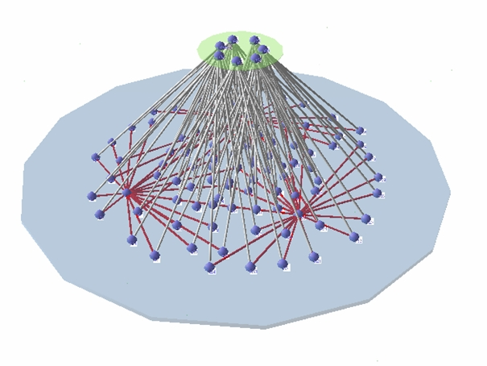 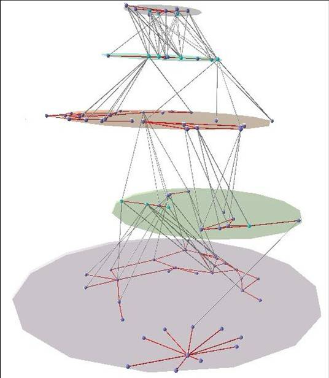 Map and animations
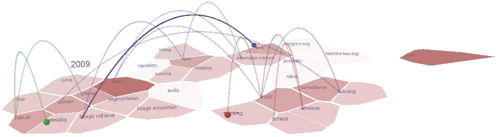
Stream graphs
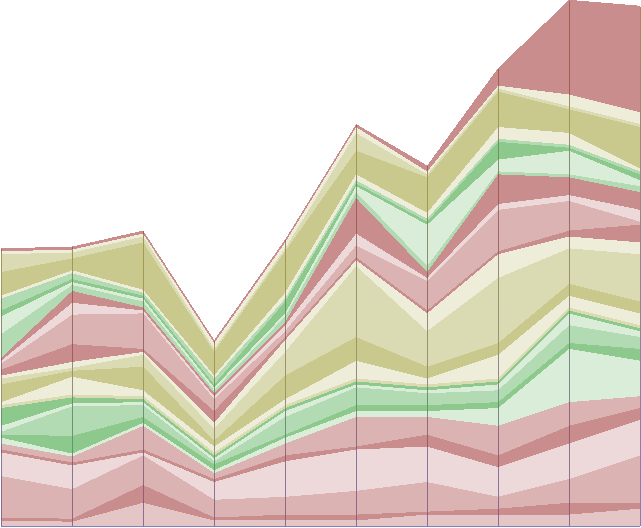
Matrix-view clustered graphs
| 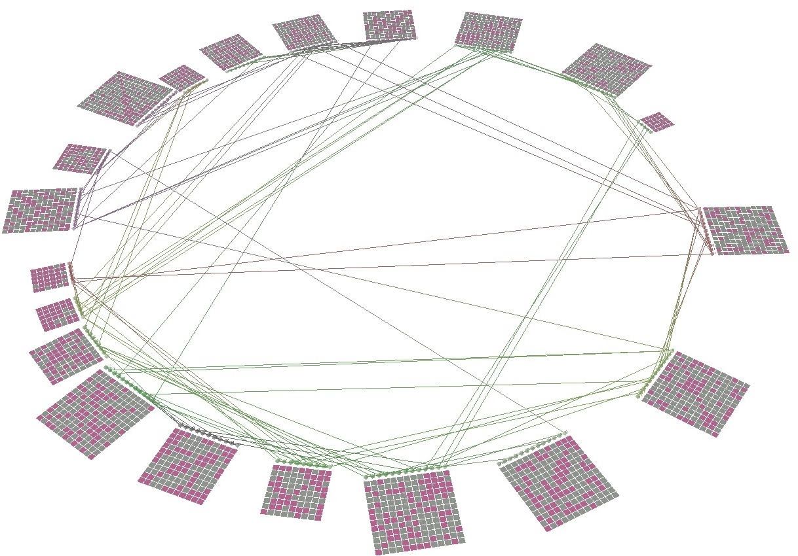 | 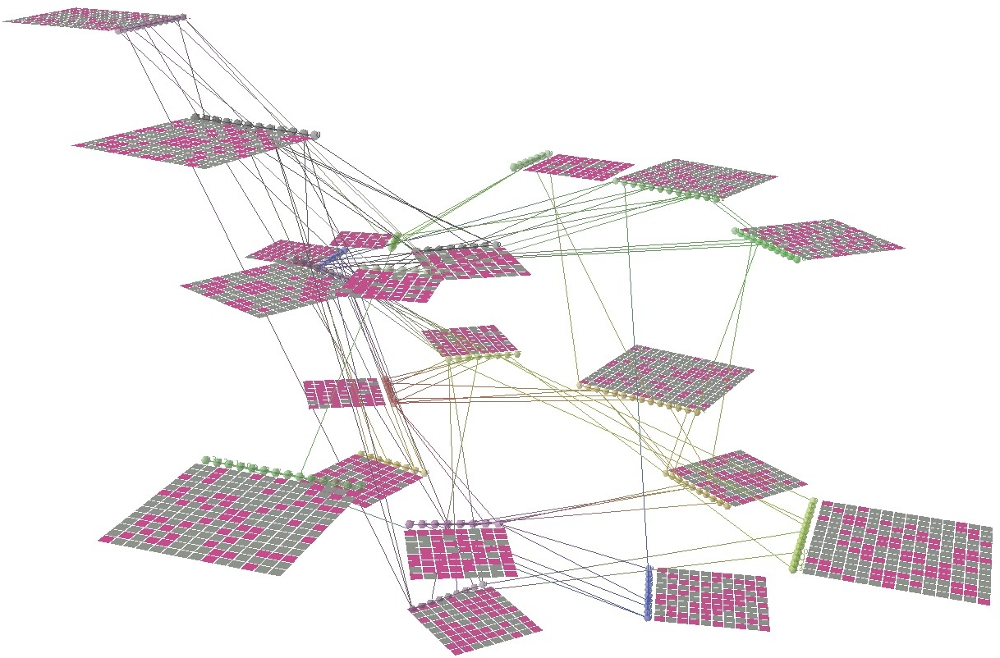 |
TGI-EB framework for Edge bundling of large static networks
StreamEB framework for Edge bundling of Graph streams
Matrix-view clustered graphs with edge bundling
| 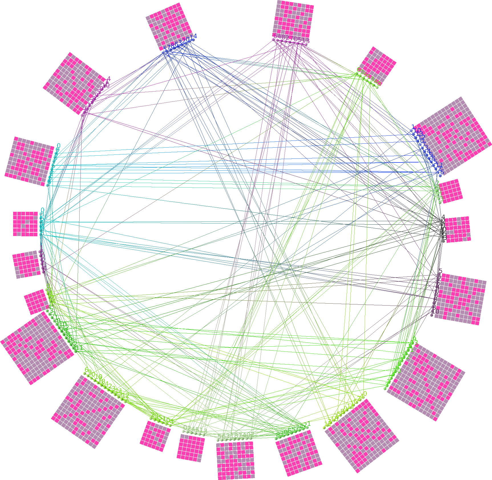 | 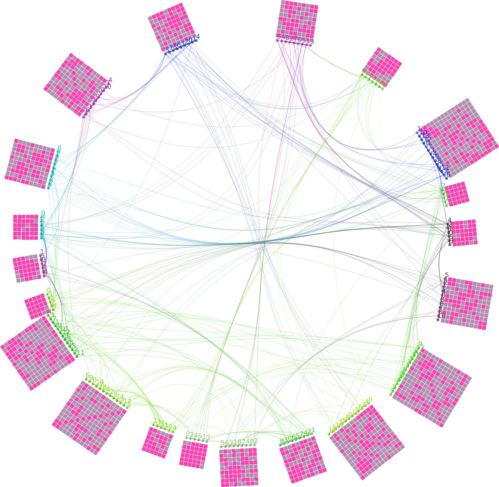 |
Software hierarchy, call graphs
Scale free graphs, dense graphs